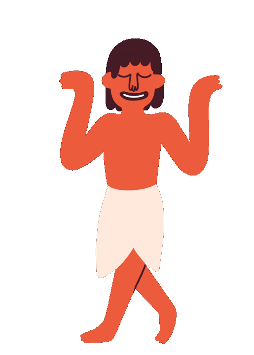

aaaaaaaaaaaa aaaaaaaaaaaaa aaaaaaaaaaaaa
Mystery of Pyramid's


aaaaaaaaaaaa aaaaaaaaaaaaa aaaaaaaaaaaaa
The origin of the theory that aliens were involved in building the pyramids can be traced back to various sources, including speculative literature, pseudoscientific claims, and media. One of the key figures associated with popularizing the idea is Erich von Däniken, a Swiss author who wrote the book "Chariots of the Gods?" published in 1968. In this book, von Däniken proposed the concept that ancient civilizations received assistance from extraterrestrial beings, suggesting that advanced technologies or knowledge were beyond the capabilities of humans at the time.
The absence of substantial evidence, alongside historical records, gradual architectural evolution, and human skills, contradicts the alien-built pyramid theory. The practical functions of pyramids and presence of similar structures globally further support human construction. The lack of concrete proof or technological remnants weakens the claim of extraterrestrial involvement.
